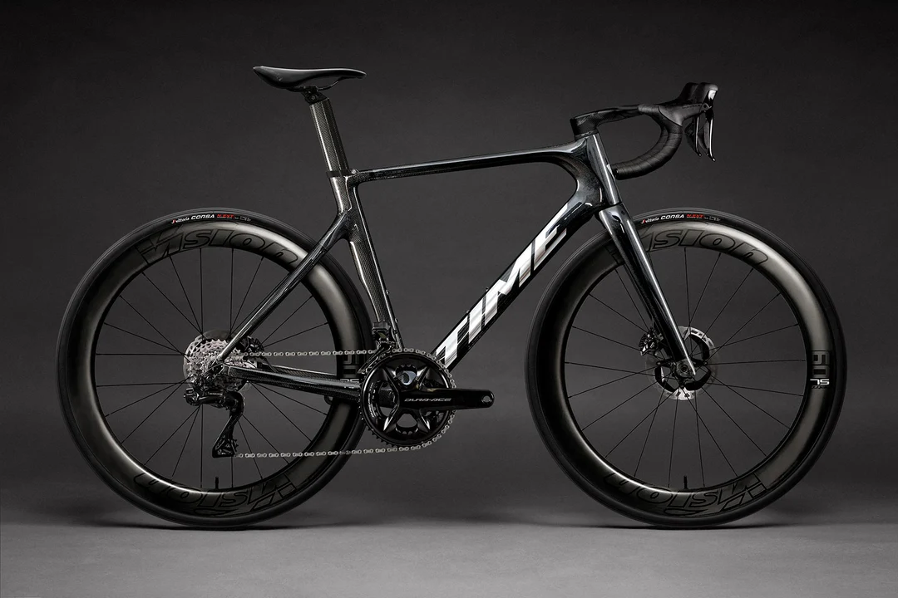

AS ART · TRBOJE
Servis in prodaja
koles v Trbojah.
Popravila, redno vzdrževanje in sestava koles.
Za termin ali ponudbo se obrnite na Andreja.
Ponedeljek–petek11.00–19.00
Trboje 102, 4000 Kranj Navodila za pot ↗

IZ PONUDBETIME Scylon
Oglejte si kolo ↗Servis in popravila
Vzdrževanje, nastavitve in menjava obrabljenih delov.
Sestava in nadgradnje
Sestava na izbranem okvirju in menjava komponent.
Kolesa in oprema
Cestna kolesa, okvirji, komponente in oprema.
KOLESA IN OKVIRJI
Iz ponudbe
Podrsajte za več
1 / 3
Za ceno, velikost in trenutno zalogo nas kontaktirajte.
TRGOVINA IN SERVIS
AS Art, Trboje 102
Trgovino in servis vodi Andrej Sajovec. Za popravilo ali sestavo kolesa se pred obiskom dogovorite za termin.
Več o trgoviniNaslovTrboje 102, 4000 KranjNavodila za pot ↗
Odpiralni časPon–pet, 11.00–19.00